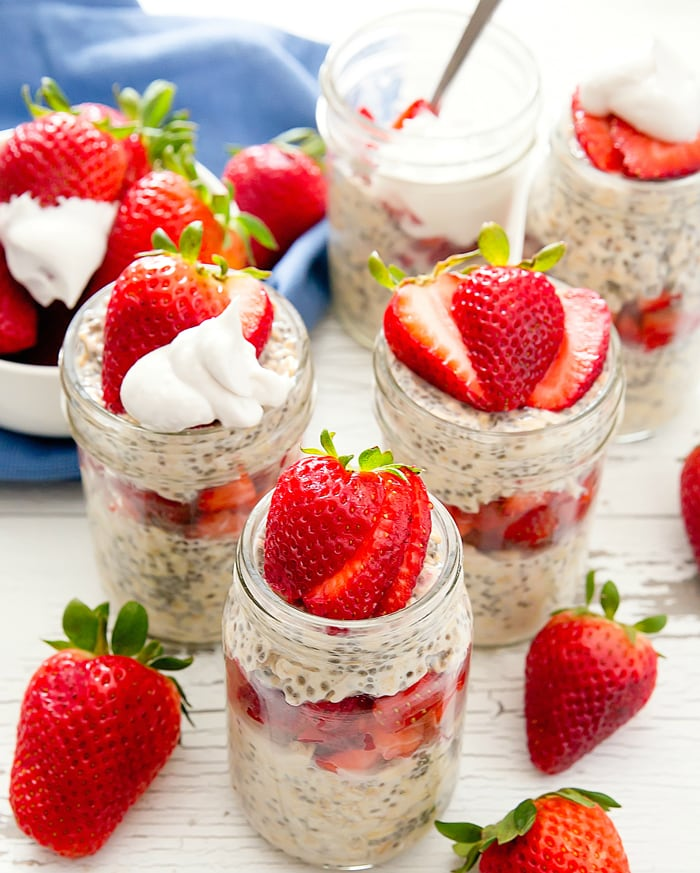

Overnight Oats

Overnight Oats with Strawberries and Greek Yogurt
Strawberry-yogurt overnight oats! An ultimate healthy pre-planned breakfast that is packed with fiber and protein.
Garnish with granola, World of Chia Fruit Spread flavor, or fresh berries.
Ingredients
- 2 cups rolled oats
- 2 cups almond milk
- 1 cup Greek yogurt
- 1 cup chopped fresh strawberries
- 1 tablespoon honey
- 1 tablespoon chia seeds
Directions
- Stir together oats, almond milk, and Greek yogurt in a bowl. Mix in strawberries, honey, and chia seeds until
well combined. Spoon mixture into 3 glass jars with lids.
- Refrigerate the jars overnight to allow the oats to soften. Serve cold in the morning.